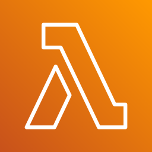

create_order
process_order
update_transaction
generate_report
notification
Amazon EventBridgeEventos de domínio conectam as funções (regras por origem e tipo)
↗ escala por função
🛡 falhas isoladas
⚡ execução automática